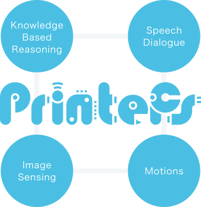

This project has been supported by the Core Research for Evolutional Science and Technology (CREST) of the Japan Science and Technology Agency (JST) (2014.10-2020.3). The platform assists end users to easily develop Artificial Intelligence (AI) and intelligent robot Applications. Such applications perform a variety of intelligent behaviors such as listening and speaking (speech dialogue), thinking (knowledge based reasoning), seeing and moving (image sensing and motions). One of the future goals of this platform is to support the co-evolution of intelligence (between humans and machines). This will be achieved through the observation of human & machine behaviour; and the discovery of new knowledge.
PRINTEPS is a platform for end users to develop AI applications and a engine to promote variety of AI applications to society.
What is PRINTEPS?
PRINTEPS (PRactical INTElligent aPplicationS) is a total intelligent application development platform that integrates 5 types of sub systems (knowledge based reasoning systems, speech dialogue systems, human and environment sensing systems, and machine learning systems). PRINTEPS supports end users to participate in AI applications design (user participation design) and to develop applications easily (within hours to days) by combining software modules from PRINTEPS.
Research


We are currently working to implement a workflow editor on PRINTEPS. Specifically, this is a Web application that operates in a Web browser. This workflow editor establishes a workflow based on an SOA and automatically produces source code in Python that can be executed in Robot Operating System (ROS).
The workflow editor allows the reference of ROS Service (Server and Client), Topic (Publisher and Subscriber), and Message as the minimal function modules. Inter-module means of connecting are automatically determined based on ROS Message types. The Message modules are used for type conversion when the values of specific fields in a composite data type are connected to the entries of other modules. PRINTEPS provides knowledge based reasoning, speech dialogue, image sensing, motions, and machine learning modules based on ROS.
Process plays a function-like role in which it compiles multiple modules. In the Process operation, processes and modules can be defined in a mixed manner.
Service is a function with the roughest grain size and is composed only of processes defined as business processes.


The first hierarchy (root service) of the workflow editor is composed of a route start, service list, and route end. The service list, when completed, will be shared among users as a best practice. It will allow users to locate easily those services, processes, or modules used as best practice.
 |
 |
 |
 |
 |
 |
||
| Pepper ©SoftBank |
Nao ©SoftBank |
Sota ©Vstone |
SociBot ©Engineered Arts |
Hiro ©KAWADA |
Baxter ©rethink robotics |
HSR ©TOYOTA |
JACO2 ©Kiova |
Research Members
Knowledge Group
 Takahira YamaguchiFaculty of Science and Technology, Keio University(Team leader)
Takahira YamaguchiFaculty of Science and Technology, Keio University(Team leader) Takeshi MoritaFaculty of Science and Technology, Keio University
Takeshi MoritaFaculty of Science and Technology, Keio University- Tadashi SuzukiSchool of Liberal Arts, Shirayuri University
- Junji YamazakiFaculty of Letters, Gakushuin University
Dialog Group
- Yukiko NakanoFaculty of Science and Technology, Seikei University(Principal researcher)
 Yutaka TakaseFaculty of Science and Technology, Seikei University
Yutaka TakaseFaculty of Science and Technology, Seikei University Ryota NishimuraGraduate School of Science and Technology, Keio University
Ryota NishimuraGraduate School of Science and Technology, Keio University
Image Sensing and Motions Group
 Hideo SaitoFaculty of Science and Technology, Keio University(Principal researcher)
Hideo SaitoFaculty of Science and Technology, Keio University(Principal researcher)- Masafumi HagiwaraFaculty of Science and Technology, Keio University
- Masaki TakahashiFaculty of Science and Technology, Keio University
 Yoshimitsu AokiFaculty of Science and Technology, Keio University
Yoshimitsu AokiFaculty of Science and Technology, Keio University Maki SugimotoFaculty of Science and Technology, Keio University
Maki SugimotoFaculty of Science and Technology, Keio University- Ayanori YorozuGraduate School of Science and Technology, Keio University
- Yuko OzasaGraduate School of Science and Technology, Keio University